CHỨC NĂNG THANH LÝ THEO ĐỊNH MỨC GIAI ĐOẠN
(Chức năng chạy thanh lý đối với doanh nghiệp có định mức sản phẩm theo nhiều giai đoạn khác nhau)
Theo Quyết định 2270/QĐ-TCHQ ban hành ngày 09 tháng 08 năm 2018 của Tổng cục Hải quan về định dạng thông điệp dữ liệu trao đổi giữa Hải quan và doanh nghiệp Gia công, Sản xuất xuất khẩu, Chế xuất. Cho phép doanh nghiệp khai báo được nhiều lần định mức cho cùng một mã Sản phẩm dựa vào các Lệnh sản xuất khác nhau.
Vậy, cùng một mã Sản phẩm xuất khẩu nhưng có nhiều bảng định mức khác, đến kỳ báo cáo doanh nghiệp làm thế nào để kiểm soát được số liệu chi tiết khi thực hiện chạy thanh lý, thanh khoản. Chức năng CHẠY THANH LÝ THEO ĐỊNH MỨC GIAI ĐOẠN sẽ giúp doanh nghiệp thực hiện bằng cách gán các lệnh sản xuất cho các sản phẩm xuất khẩu cụ thể trên từng tờ khai xuất.
Chức năng chạy thanh lý theo định mức giai đoạn sẽ bao gồm các bước thực hiện sau:
- Bước 1: Thiết lập cấu hình chức năng.
- Bước 2: Kiểm hóa tờ khai nhập khẩu/ xuất khẩu.
- Bước 3: Cập nhật lệnh sản xuất cho sản phẩm trên tờ khai xuất.
- Bước 4: Tạo lần thanh lý và nhập bảng kê danh sách tờ khai
- Bước 5: Chạy thanh lý.
- Bước 6: In báo cáo thanh lý.
- Bước 7: Đóng hồ sơ thanh lý.
Trong các bước ở trên, chỉ có bước 1, 3 và 6 là có sự khác biệt so với việc chạy thanh lý thông thường (thanh lý không có định mức giai đoạn). Các bước còn lại về ý nghĩa và cách thực hiện đều giống hệt với cách chạy thanh lý thông thường mà doanh nghiệp vẫn đang sử dụng.
Để hiểu rõ hơn, chúng ta hãy theo dõi phần hướng dẫn chi tiết phía dưới đây:
Bước 1: Thiết lập cấu hình chức năng.
Mặc định, phần mềm sẽ không hiện thị các chức năng cho phép doanh nghiệp chạy thanh lý theo định mức giai đoạn, do đó muốn thực hiện, doanh nghiệp phải thiết lập cấu hình trước, bằng cách vào menu Hệ thống/ Thiết lập thông số chương trình, sau đó đánh dấu chọn vào Thực hiện thanh lý theo giai đoạn tại mục 8. Thanh lý, thanh khoản như hình sau:

Bước 2: Nhập kiểm hóa tờ khai nhập khẩu/ xuất khẩu:
Nhập kiểm hóa tờ khai là bước thao tác bắt buộc để kiểm soát lại số liệu tờ khai trước khi đưa vào thanh lý. Để kiểm hóa tờ khai, bạn làm theo 1 trong 2 cách sau:
Cách 1: Kiểm hóa từng tờ khai.
Để kiểm hóa tờ khai, bạn mở tờ khai cần kiểm hóa vào tab “Kết quả xử lý tờ khai” chọn nút chức năng “Kiểm hóa tờ khai”:

Hoặc bạn có thể vào menu “Tờ khai hải quan / Kiểm hóa tờ khai” chọn kiểm hóa tờ khai nhập hoặc tờ khai xuất tương ứng:

Tiến hành “Chọn tờ khai” cần kiểm hóa:

Trên form giao diện kiểm hóa, bạn nhập các thông tin “Ngày thực N/X”, và kiểm tra các thông tin hàng hóa của tờ khai

Bấm “Ghi” để hoàn thành kiểm hóa:

Cách 2: Nhập kiểm hóa nhiều tờ khai.
Nếu bạn có nhiều tờ khai cần kiểm hóa, thay vì việc kiểm hóa từng tờ khai sẽ mất thời gian, phần mềm hỗ trợ nhập kiểm hóa nhiều tờ khai từ file excel. Bạn tạo 1 file excel danh sách các tờ cần kiểm hóa theo mẫu như sau:

Lưu ý, bạn có thể tạo chung danh sách tờ khai nhập và tờ khai xuất và cùng 1 sheet, nhưng để thuận tiện trong quá trình làm việc cũng như quản lý số liệu, bạn nên làm danh sách tờ khai nhập, tờ khai xuất ra 2 sheet khác nhau.
Sau khi xây dựng xong file excel có chứa danh sách tờ khai cần kiểm hóa, bạn vào menu “Tờ khai hải quan / Kiểm hóa tờ khai” chọn chức năng “Nhập kiểm hóa từ file excel”

Trên form giao diện chức năng nhập kiểm hóa từ file excel, bạn chọn file excel chứa danh sách tờ khai cần kiểm hóa, và thiết lập thông số các dòng, cột dữ liệu như trên file excel:

Sau khi thiết lập các thông số thành công, bạn bấm “Ghi” để phần mềm tiến hành kiểm hóa:
Phần mềm sẽ tiến hành kiểm hóa các tờ khai có trong file excel dựa trên thông số bạn đã thiết lập, sau khi kiểm hóa xong phần mềm sẽ có thông báo đến người dùng và số lượng tờ khai đã kiểm hóa thành công:

Bước 3: Cập nhật lệnh sản xuất cho sản phẩm trên tờ khai xuất.
- Cập nhật trực tiếp trên giao diện kiểm hóa tờ khai
- Cập nhật trên chức năng Chọn lệnh sản xuất cho sản phẩm
- Nếu sản phẩm của tờ khai chỉ có 1 định mức giai đoạn, phần mềm sẽ tự động chọn vào cho bạn
- Trên giao diện thể hiện 2 cột mã sản phẩm (Mã sản phẩm và Mã cũ). Sau khi chọn lệnh sản xuất cho sản phẩm, Mã sản phẩm lúc này sẽ bằng Mã cũ + Mã lệnh sản xuất, Mã sản phẩm này sẽ được đưa vào để chạy thanh lý. Đồng thời cột Mã cũ tương ứng để giúp doanh nghiệp đối chiếu với mã sản phẩm khai báo danh mục ban đầu (xem thể hiện chi tiết tại mục báo cáo).
- Nếu tất cả sản phẩm của tờ khai đều xuất chung 1 mã lệnh sản xuất, bạn nhấn vào nút chức năng Chọn lệnh sản xuất cho cả tờ khai
- Tự động lấy đối với mã sản phẩm chỉ có 1 định mức giai đoạn
- Tự động lấy lệnh sản xuất có khoảng thời gian gần với ngày thực xuất của tờ khai nhất
Việc cập nhật lệnh sản xuất cho sản phẩm tờ khai xuất khẩu sẽ được thực hiện sau khi tờ khai xuất đã được kiểm hóa. Hiện tại doanh nghiệp có thể cập nhật lệnh sản xuất theo 2 cách:
Sau đây là hướng dẫn chi tiết.
Cách 1: Cập nhật trực tiếp trên giao diện kiểm hóa tờ khai.
Trên giao diện chức năng kiểm hóa tờ khai xuất (Tờ khai hải quan/ Kiểm hóa tờ khai/ Kiểm hóa tờ khai xuất khẩu), sau khi đã thực hiện xong bước kiểm hóa, chức năng chọn lệnh sản xuất sẽ hiện lên:

Bạn nhấn vào nút Chọn lệnh sản xuất giao diện chức năng hiện ra như sau:

Lưu ý:
Nếu muốn chọn các lệnh sản xuất khác nhau cho từ mã sản phẩm cụ thể, bạn nhấn vào Chọn lệnh sản xuất tại dòng sản phẩm muốn chọn:

Sau đó chọn mã lệnh sản xuất cho mã sản phẩm:

Khi chọn xong, trên giao diện kiểm hóa cột Mã hàng thanh lý sẽ là Mã sản phẩm mới, cột Mã hàng khai báo sẽ là Mã cũ:

Cách 2: Cập nhật trên chức năng Chọn lệnh sản xuất cho sản phẩm.
Đây là chức năng cho phép doanh nghiệp thực hiện chọn lệnh sản xuất cho tất cả các sản phẩm của tờ khai xuất (đã được kiểm hóa). Để thực hiện, bạn vào menu Tờ khai hải quan/ Kiểm hóa tờ khai sau đó chọn mục Chọn lệnh sản xuất cho sản phẩm:

Giao diện chức năng hiện ra như sau:

Tại đây, bạn có thể nhấn vào nút Tự động chọn lệnh sản xuất...để phần mềm chọn tự động dựa vào các tiêu chí sau:
Các mã đã được chọn lệnh sản xuất sẽ hiển thị tại mục Sản phẩm đã có lệnh sản xuất:

Còn lại các sản phẩm không thể xác định tự động thì bạn chọn thủ công bằng cách nhấn nút Chọn lệnh sản xuất:

Bước 4: Tạo lần thanh lý và nhập các bảng kê.
Sau khi đã kiểm hóa xong danh sách tờ khai nhập, tờ khai xuất cần thanh lý, cập nhật mã lệnh sản xuất cho các sản phẩm trên các tờ khai xuất khẩu. Bạn tạo lần thanh lý mới trên phần mềm bằng cách vào menu “Loại hình / Thanh lý sản xuất xuất khẩu” chọn chức năng “Tạo hồ sơ thanh lý V5”:

Trên form giao diện hồ sơ thanh lý, bạn nhập “Ngày bắt đầu TL” và bấm “Ghi thông tin hồ sơ thanh lý” để tạo hồ sơ thanh lý:
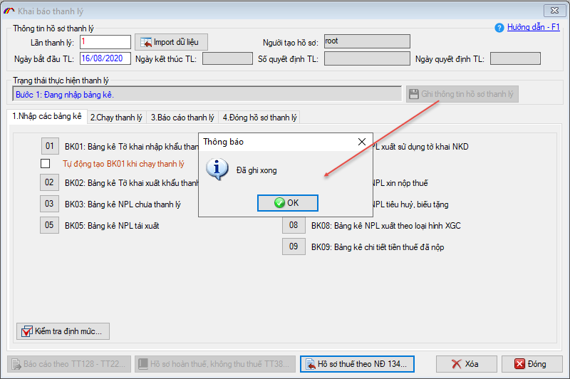
Sau khi tạo hồ sơ thanh lý thành công, các bảng kê tờ khai sẽ hiện ra để bạn nhập liệu. Bạn tiến hành nhập các bảng kê tờ khai.
Chú ý: Trong 1 hồ sơ thanh lý, hiện nay có 9 bảng kê tờ khai, trong đó BK01 và BK02 là 2 bảng kê cơ sở và bắt buộc phải có, các bảng kê còn lại từ BK03 đến BK09 là để kê khai chi tiết các tính huống nghiệp vụ phát sinh như: NPL huỷ, biếu tặng, NPL tái xuất, NPL chưa thanh lý, NPL đã nộp thuế … Trường hợp không phát sinh thì các bảng kê này không cần nhập liệu.
Chú ý: Trong 1 hồ sơ thanh lý, hiện nay có 9 bảng kê tờ khai, trong đó BK01 và BK02 là 2 bảng kê cơ sở và bắt buộc phải có, các bảng kê còn lại từ BK03 đến BK09 là để kê khai chi tiết các tính huống nghiệp vụ phát sinh như: NPL huỷ, biếu tặng, NPL tái xuất, NPL chưa thanh lý, NPL đã nộp thuế … Trường hợp không phát sinh thì các bảng kê này không cần nhập liệu.
Nhập BK01: Bảng kê tờ khai nhập thanh lý
Bạn kích chuột vào nút  để cửa sổ BK01 hiện ra như sau:
để cửa sổ BK01 hiện ra như sau:

Để thêm tờ khai vào bảng kê bạn chọn nút  :
:
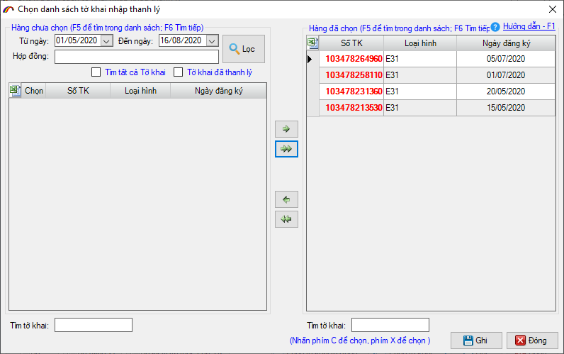
Để chọn tờ khai nhập đưa vào thanh lý bạn kích chọn tờ khai đó bên danh sách Tờ khai chưa chọn và kích nút  (hoặc ấn phím C), ngược lại nếu muốn xoá một tờ khai ra khỏi danh sách tờ khai đã chọn bạn kích chuột vào tờ khai đó trên danh sách Tờ khai đã chọn và ấn nút
(hoặc ấn phím C), ngược lại nếu muốn xoá một tờ khai ra khỏi danh sách tờ khai đã chọn bạn kích chuột vào tờ khai đó trên danh sách Tờ khai đã chọn và ấn nút  ( hoặc ấn phím X) (nút
( hoặc ấn phím X) (nút  và
và  là cho tất cả các tờ khai trên danh sách)
là cho tất cả các tờ khai trên danh sách)
Sau khi chọn xong danh sách tờ khai nhập bạn chọn nút  để quay lại cửa sổ BK01 với danh sách tờ khai đã chọn và kích nút :
để quay lại cửa sổ BK01 với danh sách tờ khai đã chọn và kích nút :
để quay lại cửa sổ BK01 với danh sách tờ khai đã chọn và kích nút :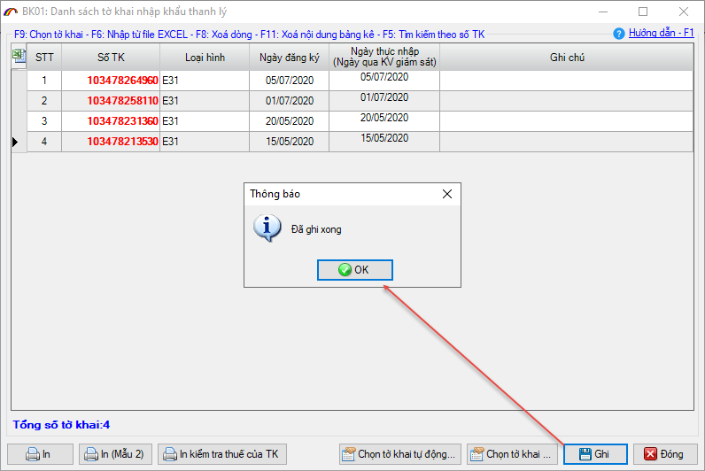
Lưu ý: nếu khi bạn bấm “Chọn tờ khai” mà danh sách tờ khai không hiện ra, thì bạn chú ý nhập lại điều kiện lọc:
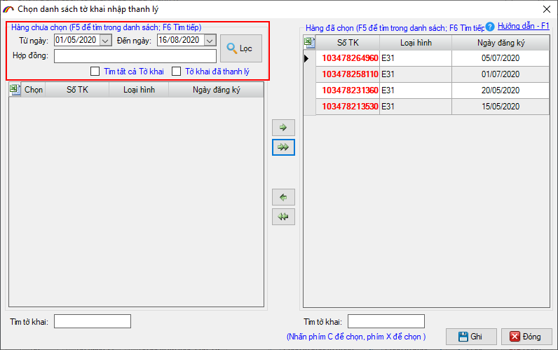
Nhập BK02: Bảng kê tờ khai xuất thanh lý
Bạn kích chuột vào nút  để cửa sổ BK02 hiện ra như sau:
để cửa sổ BK02 hiện ra như sau:

Để tờ khai vào bảng kê bạn chọn nút  :
:
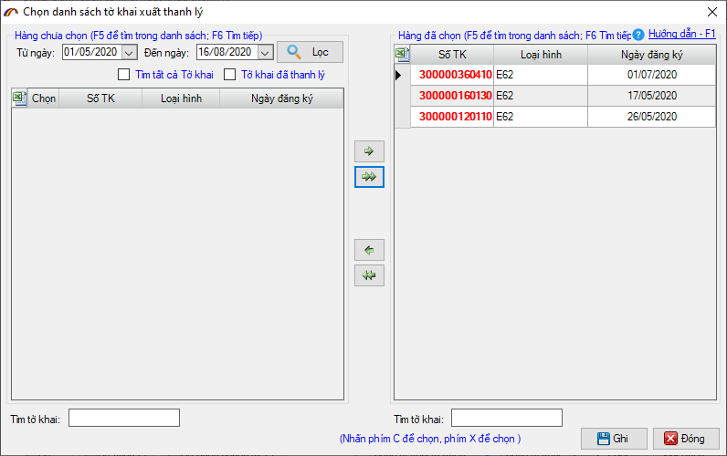
Để chọn tờ khai xuất đưa vào thanh lý bạn kích chọn tờ khai đó bên danh sách Tờ khai chưa chọn và kích nút  (hoặc ấn phím C), ngược lại nếu muốn xoá một tờ khai ra khỏi danh sách tờ khai đã chọn bạn kích chuột vào tờ khai đó trên danh sách Tờ khai đã chọn và ấn nút
(hoặc ấn phím C), ngược lại nếu muốn xoá một tờ khai ra khỏi danh sách tờ khai đã chọn bạn kích chuột vào tờ khai đó trên danh sách Tờ khai đã chọn và ấn nút  ( hoặc ấn phím X) (nút
( hoặc ấn phím X) (nút  và
và  là cho tất cả các tờ khai trên danh sách)
là cho tất cả các tờ khai trên danh sách)
Sau khi chọn xong danh sách tờ khai xuất bạn chọn nút để quay lại cửa sổ BK02 với danh sách tờ khai đã chọn và kích nút :
để quay lại cửa sổ BK02 với danh sách tờ khai đã chọn và kích nút :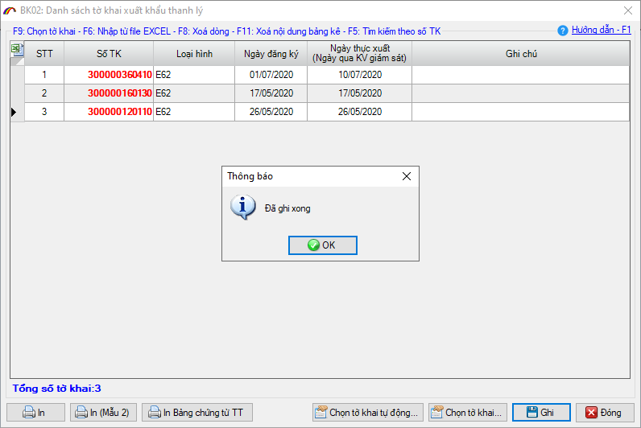
Ngoài ra còn một số các bảng kê khác, cách thức nhập liệu cũng tương tự như các bảng kê đã được hướng dẫn như trên.
Bước 5: Chạy thanh lý
Sau khi nhập liệu đầy đủ các bảng kê, bạn sang tab “2.Chạy thanh lý” để tiến hành chạy hồ sơ thanh lý:
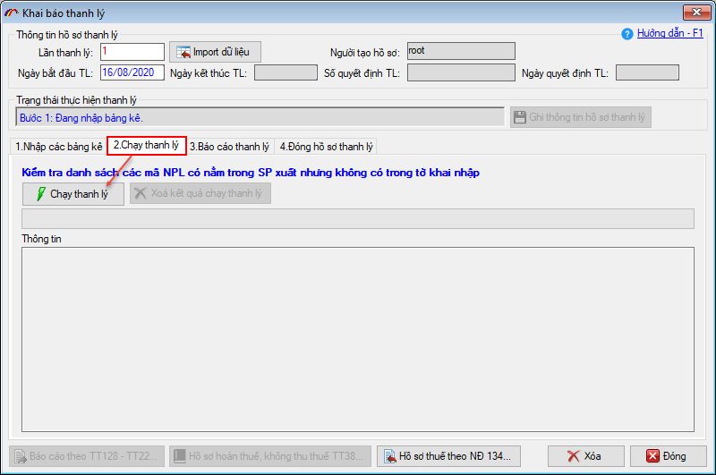
Phần mềm sẽ check một số thông tin và đưa ra cảnh báo cho bạn, bạn có thể kiểm tra lại hoặc bỏ qua để tiếp tục chạy thanh lý
Thời gian để chạy xong một lần thanh lý nhanh hay chậm phụ thuộc vào độ lớn của dữ liệu. Màn hình khi chạy thanh lý thành công:
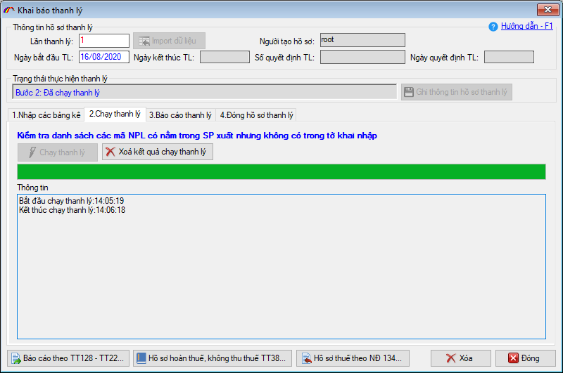
Bước 6: In báo cáo thanh lý.
Sau khi chạy thanh lý xong, bạn in báo cáo thanh lý để kiểm tra số liệu. Hiện nay, phần mềm đã nâng cấp và cung cấp cho Doanh nghiệp các mẫu báo cáo mới nhất theo quy định. Ngoài ra còn một số các mẫu báo cáo nội bộ, hoặc báo cáo theo các quy định cũ vẫn được giữ lại để phục vụ cho công tác quản lý nội bộ của Doanh nghiệp.
Một số mẫu báo cáo thường dùng: BC57, BC58 theo TT128-TT22, Hồ sơ hoàn thuế không thu TT38, Hồ sơ thuế theo NĐ 134. Để in báo cáo , bạn chọn các mẫu tương ứng:
Một số mẫu báo cáo thường dùng: BC57, BC58 theo TT128-TT22, Hồ sơ hoàn thuế không thu TT38, Hồ sơ thuế theo NĐ 134. Để in báo cáo , bạn chọn các mẫu tương ứng:
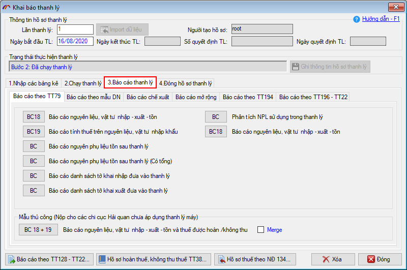
Khi in các báo cáo, mã sản phẩm sẽ được thể hiện là Mã sản phẩm đăng ký danh mục kèm với mã định danh lệnh sản xuất. Dựa vào đó là số lượng được tính theo bảng định mức theo lệnh sản xuất đã chọn, ví dụ như báo cáo xuất - nhập - tồn sau:

Bước 7: Đóng hồ sơ thanh lý.
Sau khi hoàn thành lần thanh lý đầu tiên, bạn cần thực hiện đóng lần thanh lý để tránh việc người khác vào thao tác ảnh hưởng đến số liệu đã thanh lý, hoặc để chốt số liệu tồn tại 1 giai đoạn và chuyển sang lần thanh lý thuộc giai đoạn tiếp theo. Để đóng hồ sơ thanh lý bạn vào menu “Đóng hồ sơ thanh lý”:
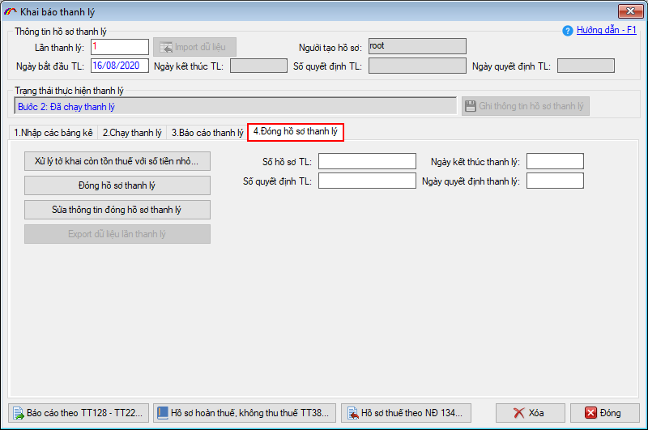
Tại đây, bạn nhập số hồ sơ TL, Số quyết định TL và ngày tháng kết thúc thanh lý, Ngày quyết định thanh lý. Hiện nay, việc chạy thanh lý chỉ để áp dụng quản lý nội bộ tại doanh nghiệp không thực hiện việc khai báo lên cơ quan Hải quan, nên việc nhập liệu các chỉ tiêu này, bạn nhập theo số quản lý nội bộ tại Doanh nghiệp của bạn. Sau khi nhập liệu xong, bạn bấm vào “Đóng hồ sơ thanh lý” để hoàn tất:
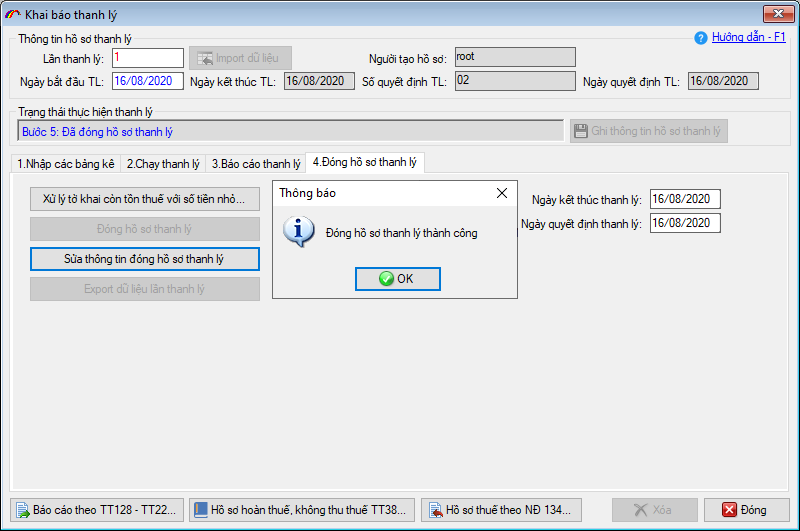
Sau khi đóng hồ sơ thanh lý trước, bạn có thể tạo những hồ sơ thanh lý tiếp theo, quy trình thực hiện tương tự như hướng dẫn trên.
Chú ý: Hiện nay việc chạy thanh lý không khai báo lên cơ quan Hải quan qua hệ thống điện tử. Trường hợp có hồ sơ hoàn thuế hoặc không thu thuế, bạn làm công văn và nộp trực tiếp tại chi cục.
Bản quyền © thuộc về Công ty TNHH Phát triển công nghệ Thái Sơn